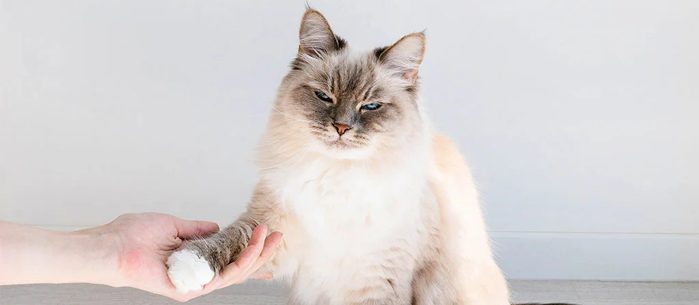

Если кошка не заинтересована в дрессировке, исправить это сложно. В поведении домашних кошек пока еще много неясного, но хорошо известно, что они учатся на собственном опыте. Если он приятный, то будут его повторять, если неприятный – будут избегать тех ситуаций, в которых он получен. При этом они вряд ли станут делать то, что для них неестественно. Подумайте над этим принципом, решая, как обучить кошку командам. И не ругайте животное, если оно не понимает команды. Ответ на вопрос, поддаются ли кошки дрессировке, зависит от того, сумеете ли вы понять вашего питомца и правильно использовать это знание.
Обучаем питомца основным командам и трюкам
Домашнего питомца можно обучить простым трюкам и командам, но для начала надо выяснить, какая награда его мотивирует. Котятам интересно все, так как они еще изучают новый мир. Пожилую кошку не прельстишь игрой – ей хочется лежать в тишине и покое. Взрослому питомцу нравится строгий порядок, к которому он привык, поэтому его желание – чтобы в жизни ничего не менялось.
Попробуйте использовать в качестве поощрения лакомства. Если животное активное, сделайте дрессировку элементом ежедневных игр. Общительным лучшей наградой может стать ваша ласка.
Самый верный подход к самой дрессировке – замечать, когда животное будет совершать какое-либо обычное для него действие, и поощрять его. Итак, разбираем подробно, как научить кота командам.
«Сидеть»